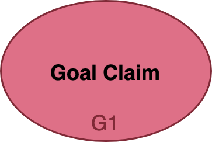
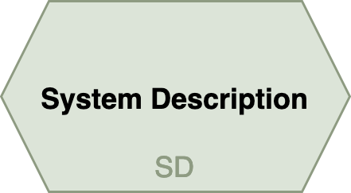
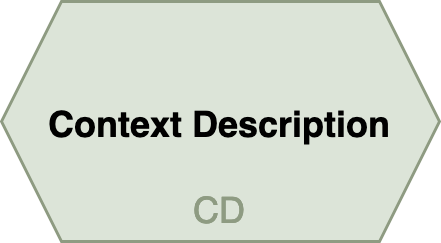
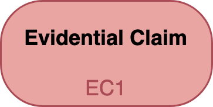
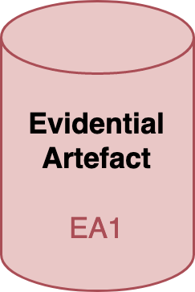

Presenting Trustworthy Assurance—A Framework and Methodology¶

Chapter Overview
This section introduces a framework and methodology for enabling a more trustworthy ecosystem of digital mental healthcare through the responsible and ethical design, development, and deployment of digital technologies. The section also serves as an introduction for the analysis and recommendations for the following sections.
First, we introduce a model of a typical research or innovation lifecycle for a data science or AI project that includes activities of project design, model development, and system deployment.
Second, we discuss the methodology of trustworthy assurance that is at the centre of our project. We provide a simple overview of the relevant procedures, focusing on the structure, elements, and purpose of an assurance case.
Finally, we look at argument patterns: reusable templates that can be developed to ensure a more consistent approach to trustworthy design, development, and deployment of digital mental healthcare.
Designing, Developing, and Deploying Trustworthy Digital Mental Health Technologies¶
Designing, developing, and deploying an AI system is not a one-person task!1 The stages and activities that comprise a typical AI project lifecycle involve a wide-ranging set of skills and capabilities. These skills are encapsulated within a variety of roles, including 'project commissioner', 'product manager', 'data protection officer', 'data scientist', 'system architect' and 'software engineer'. And, these roles are interwoven such that they create an irreducible and collective responsibility that spans the entire project lifecycle, and may span multiple teams and organisations.
Figure 2.1 presents a simplified model of a typical research or innovation lifecycle for a data science or AI project lifecycle, to help gain a purchase on these interweaving roles, skills, and responsibilities2.
The model represents three over-arching stages of (project) design, (model) development, and (system) deployment. For each stage, there are corresponding activities, detailed in Table 2.1. The project lifecycle is depicted as a circular process to highlight the fact that responsibility is ongoing and does not end once a system has been implemented or put into deployment. Rather, responsible (and trustworthy) approaches to research and innovation require consideration of how a technological system may need to be monitored and updated once in production, and removed and replaced once it reaches the end of its lifecycle.
 Figure 2.1: a model of a typical project lifecycle for a data-driven technology, detailing the overarching stages of design, development, and deployment and their constitutive activities (reprinted from Burr and Leslie, 2022)
Figure 2.1: a model of a typical project lifecycle for a data-driven technology, detailing the overarching stages of design, development, and deployment and their constitutive activities (reprinted from Burr and Leslie, 2022)
Table 2.1: Project Lifecycle Activities
| Stage | Description |
|---|---|
| Project Planning | Preliminary activities designed to help scope out the aims, objectives, and processes involved with the project, including potential risks and benefits. |
| Problem Formulation | The formulation of a clear statement about the over-arching problem the system or project addresses (e.g., a research statement or system specification) and a lower-level description of the computational procedure that instantiates it. |
| Data Extraction or Procurement | The design of an experimental method or decisions about data gathering and collection, based on the planning and problem formulation from the previous steps. |
| Data Analysis | Stages of exploratory and confirmatory data analysis designed to help researchers or developers identify relevant associations between input variables and target variables. |
| Preprocessing and Feature Engineering | A process of cleaning, normalising, and refactoring data into the features that will be used in model training and testing, as well as the features that may be used in the final system. |
| Model Selection and Training | The selection of a particular algorithm (or multiple algorithms) for training the model. |
| Model Testing and Validation | Testing the model against a variety of metrics, which may include those that assess how accurate a model is for different sub-groups of a population. This is important where issues of fairness or equality may arise. |
| Model Documentation | A process of documenting both the formal and non-formal properties of both the model and the processes by which it was developed (e.g., source of data, algorithms used, evaluation metrics). |
| System Implementation | The process of implementing the technological system into its intended environment or target domain to enable and structure interaction with the underlying model(s) (e.g. a recommender system that suggests possible treatment options for patients based on input data. |
| User Training | Training for those individuals or groups who are either required to operate a data-driven system (perhaps in a safety critical context) or who are likely to use the system (e.g. healthcare professionals, medical researchers). |
| System Use and Monitoring | Ongoing monitoring and feedback from the system, either automated or probed, to ensure that issues such as model drift have not affected performance or resulted in harms to individuals or groups. |
| Model Updating or Deprovisioning | An algorithmic model that that adapts its behaviour over time or context may require updating.3 Where no further updating can be carried out, and this results in a system being removed from production (i.e. deprovisioned), a new system may be required. This restarts the project lifecycle. |
To see how this model can help us understand the interwoven nature of responsibility, consider the following example. An organisation wants to implement a speech recognition algorithm within a service they are developing for online counselling. However, there is no one in the organisation with the relevant expertise to collect data and train a model from scratch. Therefore, they choose to procure a pre-trained model from another company. This means that a significant portion of the project lifecycle—from Data Extraction or Procurement to Model Documentation—will have been carried out by a separate organisation.
Although the specifics of the relationship between the two organisations will complicate forms of responsibility, such as legal duties or obligations, this need not concern us here. Instead, we can focus on how the initial organisation who has chosen to undertake the project (e.g. the product owner or commissioner) can use the project lifecycle model to a) identify and analyse their own responsibility and how it intersects with the responsibilities of others, and b) how this necessitates a process of trustworthy communication and assurance.
Reflective and Anticipatory Deliberation¶
At the start of a project, while activities such as planning and initial evaluation of feasibility are being conducted, the project lifecycle model can be used to structure reflective and anticipatory processes of deliberation among the project team. For instance, the team could use the model to identify and evaluate potential actions and decisions that are likely to emerge during specific activities, such as which data types may be required and whether stakeholders or users will consent to these data being collected and analysed (a reflective and anticipatory exercise). As this example suggests, the project team may carry out the preliminary deliberation, but additional stakeholders will need to be engaged to thoroughly evaluate the ethical, legal, and social permissibility and acceptability of the project.
Consider another example. A team of developers working for a commercial organisation have identified a risk associated with an AI system they have developed, which they claim is able to detect emotions. They have been approached by a healthcare provider who wish to procure and implement their system into a video consultation service to help their counsellors better understand the emotional and behavioural responses of their patients during an initial assessment. However, the developers did not evaluate their model (during Model Testing or Validation) using a dataset that is representative of the patient population intended by the healthcare provider that has approached them (i.e. individuals that are likely to be suffering from a mental health issue). Therefore, the developers are unable to make any claims about the generalisability of their model to this new population. Moreover, neither the developers nor the healthcare provider have engaged the relevant stakeholder groups during Project Planning to determine if this would be an acceptable use for their system. As such, additional activities would need to be carried out to determine the full scope of the risks and possible harms that could arise from the use of this technology. This would likely require the procuring organisation (i.e. the healthcare provider) to set clear requirements for what forms of evidence would be required from the developers (e.g., at Model Documentation), and to determine clear boundaries and thresholds for whether the project should proceed.
As this example illustrates, the project lifecycle structure can help support forms of reflective and anticipatory deliberation that help instantiate a responsible ecosystem of research and innovation. And, it can also help identify points in the lifecycle where structured and transparent communication between teams and organisations may be crucial.
In addition, there is a further purpose for the project lifecycle model that will become clearer in the next sections: the identification of actions and decisions that generate forms of evidence that provide justificatory support for trustworthy assurance.
What is Trustworthy Assurance?¶
Trustworthy assurance is a procedure for developing a structured argument, which provides reviewable (and contestable) assurance that a set of claims about the ethical properties of a data-driven technology are warranted given the available evidence.
This definition captures three important and interlocking components of trustworthy assurance:
- A structured argument comprising linked claims and evidence that collectively justify a top-level goal
- A procedure for developing an assurance case, which represents the argument either formally and/or visually
- Agreed upon standards for reviewing and evaluating the argument
 Figure 2.2: a schematic showing the three interlocking components that support trustworthy assurance.
Figure 2.2: a schematic showing the three interlocking components that support trustworthy assurance.
Argument¶
Trustworthy assurance is a form of argument-based assurance. It uses a structured type of documented argumentation, known as an assurance case, as the primary means for providing assurance that a goal has been obtained, based on the claims and evidence presented.
There are three basic elements of an argument:
- A claim about the goal to be established (supported by descriptions of the system and the context in which the system is intended to operate)
- A set of property claims about the project or system that collectively specify and operationalise the goal
- A set of evidential claims that jointly establish the validity of the property claims
Box 2.1 Elements of a Trustworthy Assurance Case
The following table provides summary information about the typical elements of a trustworthy assurance case. NB: the colours do not mean anything. They are purely used as a visual aid to help differentiate the elements.
| Element Name | Description | Icon |
|---|---|---|
| Goal Claim | A claim about an ethical goal of the DMHT, which the assurance case attempts to justify has been established on the basis of the evidence and argument provided. |  |
| System Description | A short description about the DMHT, including any central algorithmic techniques. |  |
| Context Description | A short description about the intended context of use for the DMHT, including the users of the system (e.g. healthcare professionals). |  |
| Property Claim | A claim about how the ethical goal has been implemented or opertaionalised, which references a property of the system or project, e.g. an action that was undertaken during the model's development. | |
| Evidential Claim | A specific claim about some evidence, which serves to establish the validity of the higher level property claim. |  |
| Evidential Artefact | A description of the evidence referred to by the above evidential claim, including a link to the relevant document where available. |  |
{kind=link}
{kind=link}
{kind=link}
{kind=link}
{kind=link}
{kind=link}
The following figure constitutes a simple (but incomplete) argument, showing the relationship between the three central elements.

Figure 2.3: a portion of a simplified assurance case on respect for privacy
Here, the goal that is being established relates to the project team's ambition to 'respect user privacy'. They argue that this is achieved by adherence to data minimisation principles—a claim about a property of the project's governance and the system's design. Evidence of this adherence is also provided.
While useful as an illustration, this example is too simple to constitute a full-fledged assurance case because it reduces the concept of 'respect for user privacy' to a single principle (i.e., data minimisation). Although this claim may be relevant, on its own it is insufficient. We can, for example, consider an app that collects no personal data but still violates reasonable expectations of privacy by routinely notifying and disturbing users.
A more detailed procedure is required, therefore, to help project teams identify the set of property claims that a) specify and operationalise the top-level goal and b) collectively justify the goal.
Box 2.2 Argument-Based Assurance Notation
Argument-based assurance (ABA) was defined in the previous chapter as follows:
A process of using structured argumentation to provide assurance to another party (or parties) that a particular claim (or set of related claims) about a property of a system is warranted given the available evidence.
ABA is widely used in safety-critical domains or industries where manufacturing, development, and maintenance processes are required to comply with strict regulatory requirements and legislation, while also supporting industry-recognised best practices 16. Because of these requirements, there are many formal standards that can be used to better govern the process of constructing an assurance case.
A popular standard is known as 'Goal Structuring Notation' (GSN)—originally developed in the 1990s at the University of York to assist the production, maintenance, and reuse of safety and assurance cases in safety critical industries such as traffic management and nuclear power 17. There are many similarities between GSN's assurance cases and Trustworthy Assurance, as the latter was directly inspired by the former. For example, as the name implies, GSN structures an assurance case towards a particular goal, and best practices associated with the standard prescribe methods for minimising possible harms are proportionate to the risks presented by the technology or system (e.g. minimisation of safety risks to levels that are as low as reasonably practicable). However, GSN also has additional elements (e.g. solutions and strategies) and relationships between elements that we do not include in the current presentation of Trustworthy Assurance4.
It should also be noted that our use of colours for the various elements should not be seen as signifying any meaning within a formal context. This choice was made solely for ease of comprehension for our stakeholders who were unfamiliar with the method. As we discuss in the Conclusion, our future ambitions are to explore how GSN can be used to anchor Trustworthy Assurance in a more formal notation or schema. However, for this project we chose to sidestep many of the formal considerations that arise in the GSN standard (or any other formal standards5) due to the likely barriers to comprehension that existed for our stakeholders.
Further Resources
The following resources provide good overviews and clear introductions for the reader who is interested in further exploring argument-based assurance:
- Kelly, T. (1998) Arguing Safety – A Systematic Approach to Managing Safety Cases (PhD Thesis). Available: https://www-users.cs.york.ac.uk/~tpk/tpkthesis.pdf
- The Assurance Case Working Group. (2021). GSN Community Standard Version 3. Available: https://scsc.uk/r141C:1?t=1
- Hawkins, R., Paterson, C., Picardi, C., Jia, Y., Calinescu, R., & Habli, I. (2021). Guidance on the Assurance of Machine Learning in Autonomous Systems (AMLAS). University of York. https://www.york.ac.uk/media/assuring-autonomy/documents/AMLASv1.1.pdf
- Laher, S., Brackstone, C., Reis, S., Nguyen, A., White, S., & Habli, I. (2022). Review of the Assurance of Machine Learning for use in Autonomous Systems (AMLAS) Methodology for Application in Healthcare. 32. https://arxiv.org/ftp/arxiv/papers/2209/2209.00421.pdf
- Sujan, M. A., Habli, I., Kelly, T. P., Pozzi, S., & Johnson, C. W. (2016). Should healthcare providers do safety cases? Lessons from a cross-industry review of safety case practices. Safety Science, 84, 181–189. https://doi.org/10.1016/j.ssci.2015.12.021
Procedure¶
The procedure advocated for trustworthy assurance is the anticipatory and deliberative exercise introduced above, which incorporates inclusive and accessible forms of stakeholder engagement.
By using the project lifecycle model as a scaffold for anticipatory reflection and stakeholder-informed deliberation, project teams are able to answer the following questions:
- Which claims (that may emerge from participatory deliberation) are necessary and sufficient to specify and justify the top-level goal?
- How do these claims relate to one another?
- What evidence is required to demonstrate the validity of the claims being made?
Consider the following example. A company wishes to develop an assurance case that shows how their system, which uses a ML algorithm to predict whether users of an online betting platform are "problem gamblers", can generate results that are explainable to their users. They decide this is an important ethical goal for an assurance case, because they want to be able to provide accessible forms of communication to any user that they contact on the basis of their algorithmically-generated prediction.
They start by formulating the following goal statement, which sets out an ambitious objective to achieve:
"An explanation of how our system predicts whether a user is a "problem gambler" can be provided to all users of our platform."
Next, they consider which potential actions or decisions taken throughout the stages of the project lifecycle could be relevant to the specification and justification of this goal. For example, they flag that results from a series of planned workshops to be carried out with representative users during their Project Planning activities may be relevant.
Following the delivery of these workshops, it turns out that plain language explanations are preferable to detailed explanations of the algorithmic techniques, but that users were more trusting of these explanations when they knew they had been independently validated by a professional auditor. This result influences which machine learning algorithm the team go on to select during the Model Selection and Training activities, and which features they report on during Model Documentation for the independent audit.
Once the team have reflected on all the stages of the project lifecycle, and carried out the corresponding activities, they recognise that there are two broad sets of claims. One set of claims are about the design choices made during the project, which support accessible explanations for users. The second set are about the interpretability of the system, which are relevant for professional auditing and assessment of the system. Categorising the claims in this manner helps the company determine what evidence will be needed for each claim, and how best to structure the argument. At this point, most of the evidence has already been generated as a byproduct of the team's work, so this stage is primarily a matter of collection, curation, and communication (through documenting an assurance case).
The following figure summarises the points made in the above example.

Figure 2.4: a portion of the assurance case for this hypothetical project.
The final component of trustworthy assurance relates to standards.
Standards¶
Standards support the development and refinement of best practices and codes of conduct. There are standards for measurement (e.g., universal scales), procedures (e.g., manufacturing), and assessments (e.g., risk and impact assessment), and much more. Here, we are interested in standards as they pertain to evidence and claims.
Evidential standards can refer to both the identification and evaluation of evidence.
Standards for identifying evidence are common in areas such as law where rules exist to determine what constitutes relevant, material, and admissible evidence.
Similarly, standards for evaluating the quality of evidence are well-established in domains such as scientific research, where various procedures or methods are held to produce reliable forms of evidence (e.g. peer review or randomised controlled trials), and in risk assessment and management (e.g. standardised guidelines on risk management for systems and software engineering).6
As distinct communities of practice develop and emerge within digital mental healthcare, we would expect standards and best practices to evolve to help with both the identification and evaluation of evidence. Subsequently, this would help support the development of trustworthy assurance in domains such as digital mental healthcare because specific types of claims or evidence would be recognised as more reliable forms of evidence-based assurance.
It should be noted, however, that regulators and developers are not starting with a blank slate. There are many relevant standards that exist today, and new standards are emerging to support the procedure of constructing a trustworthy assurance case.7 We will consider some of these standards in Chapter 3.
Argument Patterns¶
Claims as Reasons¶
Trustworthy assurance is a process of giving and justifying claims about choices made during the design, development, and deployment of DMHTs. These claims can be viewed as a series of reasons for why a particular decision was made.
To see why, let’s assume that an organisation is in the process of procuring an AI-enabled chatbot to provide therapeutic support to service members returning from deployment.8 As this technology is new and relatively untested, the organisation has a series of questions for the developers.
- "Why should we license this digital system instead of investing in traditional forms of talk therapy?"
- "Why have you chosen a female avatar as your virtual assistant?"
- "How did you measure and validate the clinical efficacy of the system for different subgroups to ensure that it is fair?"
In answering these three questions, the developers would be giving reasons (supported by evidence) for their actions—reasons that would need to be accepted by the procuring organisation to be relevant and justifiable. This perspective on claims emphasises one of their most vital roles as publicly contestable reasons. That is, whether a claim or set of interrelated claims are valid in the context of an assurance case is, in part, conditional on whether they are accepted as reasonable justifications by those who are tasked with evaluating the assurance case9.
Let’s look at another example. Consider the following section of an assurance case for the aforementioned chatbot, which the developers have produced for the procuring organisation:

Figure 2.5: a portion of an assurance case for a chatbot10
As we have discussed, the organisation responsible for evaluating the trustworthiness of the AI system has to determine whether the evidential claim (EC1) is a reasonable choice to justify its parent claim (C2). They may, for instance, argue that EC1 is a reasonable claim, but nevertheless argue that it is insufficient on its own to justify the claim that the chatbot is an "accessible" alternative to human-led therapy. Alternatively, they may claim that it is not reasonable on the grounds that the ratings given by the service members are not relevant to establishing whether the chatbot is an “accessible form of therapy” but merely that the avatar is “friendly and realistic”. This example highlights a potential challenge associated with the development of assurance cases: determining what constitutes relevant, sufficient, and reasonable claims.
In the context of safety assurance, a large body of guidance has been established to help developers assess what claims they will need to establish and justify, and a key part of this guidance is the development of argument patterns.
What are argument patterns?¶
Argument patterns are starting templates for building assurance cases. They identify the types of claims (or, the sets of reasons) that need to be established to justify the associated top-level normative goal. Figure 2.6 shows an example argument pattern for the technical goal of interpretability.11
 Figure 2.6: a pattern for an interpretability case (reprinted from Ward and Habli, 2020)
Figure 2.6: a pattern for an interpretability case (reprinted from Ward and Habli, 2020)
The pattern depicted in Figure 2.6 shows a template for an assurance case that serves to justify the following top-level goal:
"The {ML Model} is sufficiently {interpretable} in the intended {context}".
Here, the curly brackets serve as placeholders for specific variables that are properly established when a full assurance case is developed. A notable contribution of this pattern is the identification of three essential aspects of interpretability:
- Right Method: The right interpretability methods are implemented, i.e. the correct information is faithfully being explained.
- Right Context:
- Time: Interpretations produced at the appropriate times.
- Setting: Interpretations are available in the right setting.
- Audience: Interpretations produced for the right audience.
- Right Format: The interpretability methods are presented in the right format for the audience.
These three essential aspects subsequently serve to delineate the more detailed argument and evidential claims at the lowest levels.
Argument patterns, such as the one above, are helpful for the following reasons:
- They provide a consistent and systematic approach for the reflective and deliberative activities carried out across a project’s lifecycle.
- They speed up the process of developing assurance cases.
- They provide reusable structures that, if used widely throughout a domain, could establish best practices.
But where do they come from?
Generalisable Patterns¶
In the case of the argument pattern from Figure 2.6, this pattern was proposed by the authors as a means to address a gap in the safety assurance of ML systems. As experts in their domain, and as a peer-reviewed contribution, this is a valid source for an argument pattern.
However, an alternative (though not entirely disconnected) means for achieving generalisable structures and patterns is through participatory engagement from stakeholders and affected users, perhaps building sample assurance cases and then extracting common themes. This is the method that we have explored in the current project on Digital Mental Healthcare and subsequently propose as a procedure for Trustworthy Assurance.
Much like ML algorithms, humans have remarkably effective (but biased) pattern recognition capabilities, some of which underpin our assessment and internalisation of ethical, legal, and social norms. As an example, James W. Nickel says of human rights:
"We can think of the emergence of a human right as the coming together of the recognition of a problem; the belief that the problem, is very severe; and optimism about the possibility of addressing it through social and political action at national and international levels." 12
Similarly, we can think of ethical and social norms as the shared recognition and subsequent externalisation of beliefs and attitudes towards events as diverse as acceptable etiquette during a dinner party through to permissible forms of punishment for various transgressions.
This understanding of the emergence of norms is crucial to ensuring the relevance, sufficiency, and reasonableness of evidence, and the legitimacy of corresponding trustworthy argument patterns.
In terms of the emergence of argument patterns, the three elements that we have explored already are, again, important: the top-level normative goal, the property claims, and the evidential support. Let's take each of these in turn.
The phrase 'trustworthy assurance' creates a wide scope for top-level goals that may be deemed relevant to establishing trust (e.g. sustainable digital platforms, accountable methods of data governance, fair classifiers, and explainable decision support systems). As trustworthy assurance cases are developed for data-driven technologies, it is likely that we will see certain goals emphasised (and re-emphasised) over others. In turn, these normative goals will orient other projects and help cultivate best practices. In related work, we have proposed a series of ethical principles that have been developed to provide actionable insights and safeguards on responsible research and innovation in data science and AI.13 They are known as the SAFE-D principles:
- Sustainability
- Accountability
- Fairness
- Explainability
- Data (Quality, Integrity, Protection and Privacy)
These principles have been refined and validated in a wide range of domains, and were originally based on a broad understanding of the typical harms and benefits associated with data-driven technology (e.g. starting from the felt injustices or needs of users and stakeholders, and developing principles to reflect these challenges). Therefore, unlike alternative frameworks they are tailored to the specific needs and challenges of responsible, trustworthy, and ethical data science and AI, rather than, say, importing or revising existing frameworks such as biomedical ethics.14
However, the SAFE-D principles were designed to be domain-neutral starting points. That is, we did not presume that these principles would capture the ethical, social, and legal values that are dominant in digital mental healthcare. Instead, the present project undertook a process of exploratory engagement and participatory design to explore which ethical values and principles were relevant to the specific context of trustworthy digital mental healthcare, and whether specific SAFE-D principles captured these. We will return to this point in Chapter 4 where we analyse our findings from the project's workshops.
Turning now to the property claims and supporting evidence, as assurance cases are communicated for specific goals we will likely see sets of property claims and supporting evidence used more than others as justifiable and accepted reasons for establishing the respective goal. For instance, as developers focus on goals like 'accountability', core attributes of the system and project are likely to be emphasised as relevant targets (e.g. constructing traceable data pipelines, establishing mechanisms to support auditing processes, ensuring accessible documentation).
Returning to the SAFE-D principles once more, we have previously developed a set of core attributes for each of the principles, which a) identify the types of properties that need to be established in a project or a system to ensure the relevant goal is obtained and b) the stages of the project lifecycle where actions can be taken to implement the respective property. Table 2.2 shows an example of the core attributes for 'sustainability'.
Table 2.2: a summary of the core attributes for the principle 'sustainability'
| Core Attribute | Description |
|---|---|
| Safety | Safety is core to sustainability but goes beyond the mere operational safety of the system. It also includes an understanding of the long-term use context and impact of the system, and the resources needed to ensure the system continues to operate safely over time within its environment (i.e. is sustainable). For instance, safety may depend upon sufficient change monitoring processes that establish whether there has been any substantive drift in the underlying data distributions or social operating environment. Or, it could also involve engaging and involving users and stakeholders in the design and assessment of AI systems that could impact their human rights and fundamental freedoms. |
| Security | Security encompasses the protection of several operational dimensions of an AI system when confronted with possible adversarial attack. A secure system is capable of maintaining the integrity of its constitutive information. This includes protecting its architecture from the unauthorised modification or damage of any of its component parts. A secure system also remains continuously functional and accessible to its authorised users and keeps confidential and private information secure even under hostile or adversarial conditions. |
| Robustness | The objective of robustness can be thought of as the goal that an AI system functions reliably and accurately under harsh or uncertain conditions. These conditions may include adversarial intervention, implementer error, or skewed goal-execution by an automated learner (in reinforcement learning applications). The measure of robustness is, therefore, the strength of a system’s functional integrity and the soundness of its operation in response to difficult conditions, adversarial attacks, perturbations, data poisoning, or undesirable reinforcement learning behaviour. |
| Reliability | The objective of reliability is that an AI system behaves exactly as its designers intended and anticipated. A reliable system adheres to the specifications it was programmed to carry out. Reliability is therefore a measure of consistency and can establish confidence in the safety of a system based upon the dependability with which it conforms to its intended functionality. |
| Accuracy and Performance | The accuracy of a model is the proportion of examples for which it generates a correct output. This performance measure is also sometimes characterised conversely as an error rate or the fraction of cases for which the model produces an incorrect output. Specifying a reasonable performance level for the system may also require refining or exchanging the measure of accuracy. For instance, if certain errors are more significant or costly than others, a metric for total cost can be integrated into the model so that the cost of one class of errors can be weighed against that of another. |
Again, we are not proposing that these principles and core attributes should be adopted in digital mental healthcare as the respective goals, claims, and evidence. However, they could provide a starting point for the refinement of domain-specific principles while argument patterns emerge and become crystallised.15
Figure 2.7 offers a simple graphic to help visualise this process as it relates to trustworthy assurance.
 Figure 2.7: process of consensus formation for ethical principles as constraints on trustworthy assurance
Figure 2.7: process of consensus formation for ethical principles as constraints on trustworthy assurance
These preliminary remarks about trustworthy assurance serve as a foundation for understanding and contextualising our project's research and the recommendations we derive from our findings.
-
Rather, it "takes a village to raise an algorithm" as noted in this blog post. Thanks to one of our reviewers for bringing this post to our attention. ↩
-
To be clear, we are referring here to role and task responsibilities first and foremost, which overlap with but are conceptually separate from moral responsibility. ↩
-
Updating can also occur in cases where no adaptive behaviour is present for reasons such as performance improvements or bug fixes. ↩
-
See Part 1 of the GSN Standard, Version 3 for a complete overview of the notation. ↩
-
Another alternative to GSN is the Claims, Arguments and Evidence notation developed by Adelard. ↩
-
For example, guidance such as ISO/IEC/IEEE 16085, 'Systems and software engineering - Life cycle management - Risk Management' ↩
-
The AI Standards Hub, for example, serves an observatory of relevant standards for AI technologies (see https://aistandardshub.org). ↩
-
For an example of this type of technology, see Lucas et al. (2017). Reporting Mental Health Symptoms: Breaking Down Barriers to Care with Virtual Human Interviewers. Frontiers in Robotics and AI. https://www.frontiersin.org/articles/10.3389/frobt.2017.00051 ↩
-
See Kirsch, A. (2017). Explain to whom? Putting the User in the Center of Explainable AI. Proceedings of the First International Workshop on Comprehensibility and Explanation in AI and ML 2017 Co-Located with 16th International Conference of the Italian Association for Artificial Intelligence (AI*IA 2017). https://hal.archives-ouvertes.fr/hal-01845135 ↩
-
Recall, that evidential claims are required to link property claims to their supporting evidential artefacts, and evidential claims, therefore, can also serve as reasons. ↩
-
Ward, F. R., & Habli, I. (2020). An Assurance Case Pattern for the Interpretability of Machine Learning in Safety-Critical Systems. https://doi.org/10.1007/978-3-030-55583-2_30 ↩
-
Nickel, J. W. (2007) Making Sense of Human Rights (2nd Edition). Blackwell Publishing. ↩
-
The most recent and comprehensive account of this framework can be found in the following proposal to the Council of Europe: Leslie, D., Burr, C., Aitken, M., Katell, M., Briggs, M., & Rincon, C. (2022). Human rights, democracy, and the rule of law assurance framework for AI systems: A proposal. https://rm.coe.int/huderaf-coe-final-1-2752-6741-5300-v-1/1680a3f688. ↩
-
For a contrasting approach, see Floridi, L., & Cowls, J. (2019). A Unified Framework of Five Principles for AI in Society. Harvard Data Science Review. https://doi.org/10.1162/99608f92.8cd550d1 ↩
-
This process is (loosely) derived from the idea of 'reflective equilibrium', made famous by the political philosopher John Rawls. In short, the phrase 'reflective equilibrium' refers to a state of coherence among moral beliefs and attitudes, which emerges over time as a result of public deliberation and consensus building activities that focus on the relevant moral beliefs and attitudes (e.g. notions of 'justice'). ↩
-
Richard Hawkins, Colin Paterson, Chiara Picardi, Yan Jia, Radu Calinescu, and Ibrahim Habli. Guidance on the Assurance of Machine Learning in Autonomous Systems (AMLAS). Technical Report, University of York, Assuring Autonomy International Programme, March 2021. URL: https://www.york.ac.uk/media/assuring-autonomy/documents/AMLASv1.1.pdf (visited on 2022-09-08). ↩
-
The Assurance Case Working Group. GSN Community Standard Version 3. Technical Report, The Assurance Case Working Group, May 2021. URL: https://scsc.uk/r141C:1?t=1. ↩